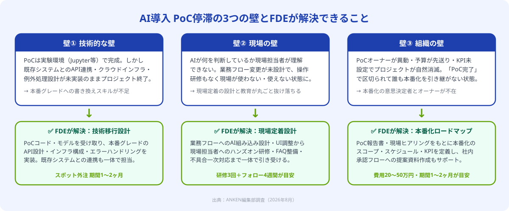

📅 本記事は2026年8月時点の情報に基づいています。
PoCから本番化へ、FDE活用をスポット外注で相談する
「PoCは完了したが次のステップが見えない」「どこから手をつければいいかわからない」という段階でも大丈夫です。しつこい営業は一切ありません。初回相談無料・1時間以内にご返信。
無料で相談する（初回相談無料）なぜAI導入はPoC止まりになるのか
2026年の国内企業を対象とした調査では、「AI導入のためのPoCを実施した経験がある」と答えた企業のうち、約7割が「本番環境での継続的な運用に至っていない」と回答しています。PoCが成功しているにもかかわらず、なぜ本番化できないのでしょうか。
原因を分解すると、大きく3つの壁が浮かび上がります。
壁①｜技術的な壁
PoCはJupyter NotebookやGoogle Colabなど実験環境で構築されることが多く、既存の基幹システム・業務アプリとの連携設計、クラウドインフラの選定、APIのエラーハンドリング・スケーリング対応などが未実装のまま終わります。「精度90%のモデルが完成した」状態と「毎日100件の業務データを処理して結果を業務システムに書き戻す」状態の間には、大きな技術ギャップがあります。
壁②｜現場の壁
PoCを担ったのがデータサイエンティストやITベンダーの場合、現場の担当者が「どう使うか」を設計した人が誰もいないというケースが多々あります。AIが出す予測値をどの業務フローのどのタイミングで確認するのか、AIの判断が誤ったときにどう対処するのか——こうした運用設計がないと、現場は「使いにくい」「責任の所在が不明」と感じてAIを避けるようになります。
壁③｜組織の壁
PoCフェーズのプロジェクトオーナー（多くはDX推進担当や情報システム部門のリーダー）が本番移行フェーズに入ったタイミングで別プロジェクトへ異動したり、予算が次期以降に先送りされたりするケースがあります。本番化に向けたKPI設定・社内承認フロー・コスト回収シナリオが未設計のまま「PoC完了」で区切られると、プロジェクトは自然消滅します。
この3つの壁に共通しているのは、「PoCを担うスキルセット」と「本番移行・定着を担うスキルセット」が異なるという点です。PoCを成功させたチームがそのまま本番化を担える保証はなく、むしろ異なるプロフィールを持つ人材が必要になります。その役割を担うのがFDEです。

FDEがPoC→本番移行を担える理由
顧客企業の現場に「前線配置（Forward Deploy）」されるエンジニアのこと。AIシステムの技術実装だけでなく、現場業務の理解・オペレーション変更の設計・担当者へのトレーニングまでを一体で担う。2026年にAI導入支援の現場で急速に普及している職種。
FDEがPoC→本番移行フェーズに特に力を発揮できる理由は3点あります。
① 技術と現場の両方を同時に扱える：通常のエンジニアは技術仕様の設計・実装に集中し、現場の業務フロー改善は別の担当者に委ねます。FDEは技術実装と業務設計の両方を1人で進められるため、「システムは動いているが現場が使わない」という典型的な失敗を防げます。
② 「動くもの」から「使われるもの」への変換を専門にしている：PoCで完成したモデルが「実際の業務でどう動くか」という視点で、APIの設計・UIの調整・例外処理フローを設計します。実験環境のコードを本番グレードのシステムに書き直す作業（いわゆる「MLOps」「LLMOps」）も守備範囲に含まれます。
③ PoC後のタイミングだけをスポット依頼できる：FDEをフルタイム採用する必要はありません。「PoCが完了した今から本番稼働まで」という2〜3ヶ月の集中期間だけをスポット外注で依頼することで、コストを最小化しながらPoC成果を無駄にせずに済みます。
スポット外注でFDEを活用する3ステップ
ステップ1｜本番化の壁を特定し、FDEへの依頼スコープを定義する
FDEに依頼する前に、自社のPoC止まりの主因がどの壁かを明確にすることが重要です。壁の種類によって、FDEに依頼すべき業務範囲が変わります。
具体的には、以下の3点を整理してからFDEへのRFQ（見積依頼）を作成します。
- PoC報告書の確認：どの精度・指標が達成されているか、残課題は何かを把握する
- 現場ヒアリング結果：業務担当者がPoC段階でどんな不満・疑問を持っているかをリストアップ
- 既存システムの構成図：AIの出力をどの業務システムのどのデータフローに組み込む必要があるかを整理
この整理が「要件が固まっていない」という段階でも、ANKENではFDEの経験を活かした初回ヒアリングで一緒に整理することができます。
ステップ2｜PoCデータと現場課題をFDEに引き継ぎ、本番移行を設計する
スコープが定まったら、PoC段階の成果物をFDEに引き継ぎます。引き継ぎに必要な主なドキュメントは以下の通りです。
- 学習済みモデルファイル（または学習スクリプト）と学習データのサンプル
- PoCで使用したAPIやライブラリのバージョン情報
- 精度評価レポート（混同行列・精度・再現率など）
- 既存業務システムのER図またはテーブル定義書（あれば）
これらを受け取ったFDEは、現場ヒアリングを実施した上で本番移行のアーキテクチャ設計を行います。設計では特に「AIの予測が外れたときの業務フロー（フォールバック）」と「担当者の承認ステップをどこに入れるか」を重点的に定義します。承認ステップを設計段階で組み込むことで、現場の心理的抵抗を大幅に減らせます。
設計完了後はFDEが実装・テストを主導し、ステージング環境での受入テストに業務担当者を参加させることで、本番稼働前に現場の理解度を高めます。

ステップ3｜現場トレーニングと運用定着フォローをFDEに依頼する
本番稼働後が最も重要なフェーズです。「システムは動いているが誰も使っていない」という事態を防ぐため、FDEが現場への橋渡し役として以下を担います。
操作研修の実施：業務担当者向けに30〜60分程度のハンズオン研修を実施し、AIの使い方・結果の見方・異常時の対処方法を伝えます。マニュアルよりも実際に画面を操作しながら体験する研修が効果的です。
FAQ整備と問い合わせ窓口の設置：本番稼働後2〜4週間は「AIがおかしな結果を出した」「ボタンを押したらエラーになった」といった問い合わせが集中します。FDEが一次窓口として即時対応することで、現場の不安を早期に解消します。
モデルの継続改善：本番データが蓄積されてくると、PoCデータとの分布の違い（データドリフト）によって精度が落ちることがあります。FDEが定期的にモデルの精度指標をモニタリングし、必要に応じて再学習や閾値調整をスポットで実施します。
このステップまでFDEに依頼することで、単なる「システム導入」ではなく「現場で日常的に使われるAIツール」として定着させることができます。
活用事例：製造業の外観検査AIをPoC卒業させた3ヶ月
部品製造を手がける中堅メーカーA社（従業員120名）では、外観検査工程をAI化するPoCを2026年3月に完了。画像認識モデルの精度は92%を達成しましたが、「製造ラインの制御システムとの連携方法がわからない」「検査員へのトレーニングを誰が担うか決まっていない」という2点でPoC卒業が止まっていました。
FDE介入前の状況
PoCを担ったのは外部のAIベンダー。モデルの精度検証は完了したが、ベンダー契約はPoC完了で終了。社内にAIシステムを既存ラインに組み込むエンジニアがいない状態。
ANKENを通じてFDEをスポット外注（週3日・2ヶ月の契約）。FDEは初週に製造ラインの制御システム（PLC接続）とAPIの連携設計を行い、2〜4週目で本番環境への実装とステージングテストを完了。5〜6週目で検査員10名へのハンズオン研修を3回実施。7〜8週目は本番稼働後の監視対応と精度レポートの作成を担当しました。
費用は約38万円（設計・実装・研修・定着フォローの合計）。本番稼働から2ヶ月で外観検査の自動判定率が78%に達し、検査員1人あたりの手動確認件数を従来比55%削減しました。
FDEをスポット外注で探す際のチェックポイント
FDEとしてPoC本番化を依頼できる人材を選ぶ際は、以下の3点を確認します。
① PoC卒業の支援経験があるか：「PoCフェーズの経験」と「本番移行・定着フェーズの経験」は別物です。「ゼロからモデルを作った経験」ではなく「PoCが完成した状態から本番稼働まで担った経験」を持つ人材かどうかを確認します。
② 業種・業務への理解度：製造業の外観検査と医療の画像診断ではシステムの制約や現場の文化が大きく異なります。自社の業種・業務に近い案件経験があるFDEを選ぶことで、現場定着の速度が上がります。
③ 非エンジニアへの説明力：FDEは経営者・業務担当者・ITベンダーという異なるステークホルダーと同時にコミュニケーションを取ります。面談時に「AIの仕組みを現場担当者にどう説明しますか」と質問してみると、非エンジニアへの伝え方を確認できます。
よくある質問
- Q. FDEをスポット外注するとどのくらいの費用がかかりますか？
- A. 時給5,000〜8,000円が目安で、月3日〜週3日・1〜2ヶ月の短期集中依頼なら20〜50万円程度が多いです。
- Q. PoC段階ではまだFDEは必要ありませんか？
- A. PoCはデータサイエンティスト等で対応できます。FDEが最も力を発揮するのはPoC後の本番化・現場定着フェーズです。
- Q. 社内にIT部門がなくてもFDEをスポット外注で活用できますか？
- A. 活用できます。FDEは要件定義から現場ヒアリングまで自走できるため、IT部門不在の企業での活用実績が多数あります。
まとめ
AI導入プロジェクトのPoC止まりを解消するには、①本番化を阻む壁の特定とFDE依頼スコープの定義→②PoCデータと現場課題のFDEへの引き継ぎ・本番移行設計→③現場トレーニングと運用定着フォロー、という3ステップが有効です。費用は20〜50万円・期間1〜2ヶ月が目安で、FDEをスポット外注で活用することで正社員採用なしにPoC卒業を実現できます。
「PoC完了からすでに半年が経過している」「社内に本番移行を主導できる人材がいない」という状況でも、FDE経験者のスポット外注であれば短期集中で動き出せます。ANKENでは業種・業務特化のFDE経験を持つエンジニアのマッチングが可能です。
AI導入のPoC卒業をFDEスポット外注で実現する
「PoCは終わったが本番化の進め方がわからない」という段階から、FDE経験のあるスポットエンジニアをご紹介します。初回相談無料、しつこい営業は一切ありません。
無料で相談する